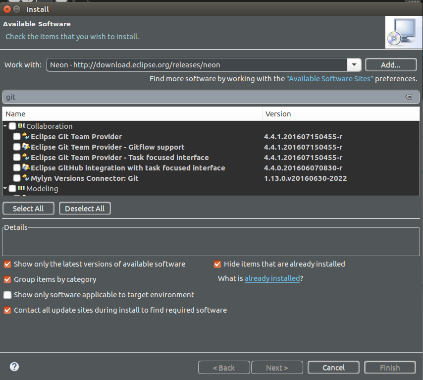

Cómo configurar y utilizar Git en Eclipse
La forma más sencilla de poder programar en Git sin quebraderos de cabeza es hacerlo desde un IDE que trabaje de forma sincronizada con los repositorios seleccionados. Uno de los más utilizados es Eclipse con el plugin de egit. - See more at:
¿Cómo configurar egit en eclipse?
En primer lugar debemos descargarnos e instalar Eclipse en nuestro sistema , lo descargamos desde su página web principal de forma gratuita. Una vez descargado e instalado eclipse debemos instalar el plugin egit en nuestro Eclipse. Para ello debemos buscar el plugin en el marketplace de la página de eclipse y seguir las instrucciones para añadirlo. Para añadirlo simplemente debemos abrir en la parte superior el menú “help” y seleccionar “install new software“.
En la siguiente pestaña que aparece seleccionamos Neon -http://download.eclipse.org/releases/neo desplegaremos la opción de Collaboration y seleccionamos
Eclipse Git Tean Provider > clic en next.

Le daremos al botón next y next, luego nos aparecerá una ventana nueva en la que nos dirá que debemos aceptar para proseguir con la instalación
Una vez que se haya terminado la descarga e instalara automáticamente, nos pedirá reinicia Eclipse.
¿Cómo configuramos eGit?
Una vez que se haya serrado el eclipse lo abriremos y configuraremos.Para ello iremos al menu
windows y allí daremos clic en
Preferencias
Una vez que se haya seleccionado Preferences se abrira una nueva ventana y nos situaremos en
Preferences >> Team >> Git >> Configuration
Cuando estemos alli seleccionamos "Add entry" y introduciremos los valores user.name y user.email para identificarnos
Una vez Hecho todos los pasos Nuestro Eclipse esta listo para programar en equipo control de verciones